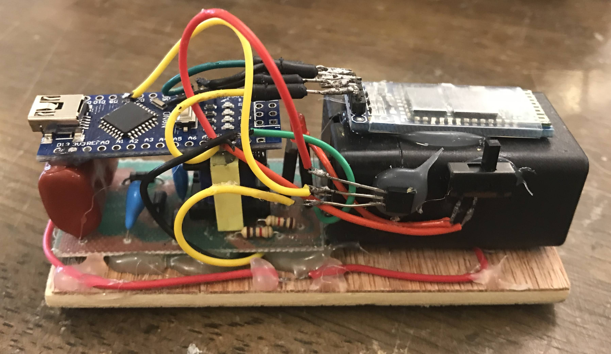

Zapcraft
A device that electrocutes you when you lose hearts in Minecraft. Built using a salvaged electric bug swatter, featuring Bluetooth connectivity and a rechargeable battery.
A device that electrocutes you when you lose hearts in Minecraft. Built using a salvaged electric bug swatter, featuring Bluetooth connectivity and a rechargeable battery.
A software that incorporates a digital model of a Rubik’s Cube to flashcard app Anki to help memorize Cube algorithms. GitHub
A mini autonomous car that scans its surroundings using ultrasound. Utilizes an H-bridge circuit for steering.
A neural network that recognizes bunny images built from complete scratch only using NumPy. Features all regularization and optimization techniques like dropout, RMS prop, and batch normalization. GitHub
A Tesla coil that generates around 20,000 volts, featuring a hand-wound secondary coil with over 1500 turns and a 3D-printed primary coil holder. This is version 3 of my Tesla coil projects.
An implementation of Conway’s Game of Life made with Python.
A flashlight that harvests energy from shaking motion using a magnet and coil. Uses a supercapacitor with a Joule-thief circuit to store and retrieve energy.
Built hacking tools like an ARP spoofer or a Backdoor with python.
A device that sends out pulsed flashes of light to create an illusion of stopping or slowing down water drops and fans.
If you noticed a sharp decline in hands-on projects after 2023, That’s because it was when I moved back to Korea and had to leave behind most of my tools and components. I’ve mostly been doing coding projects and research since then.